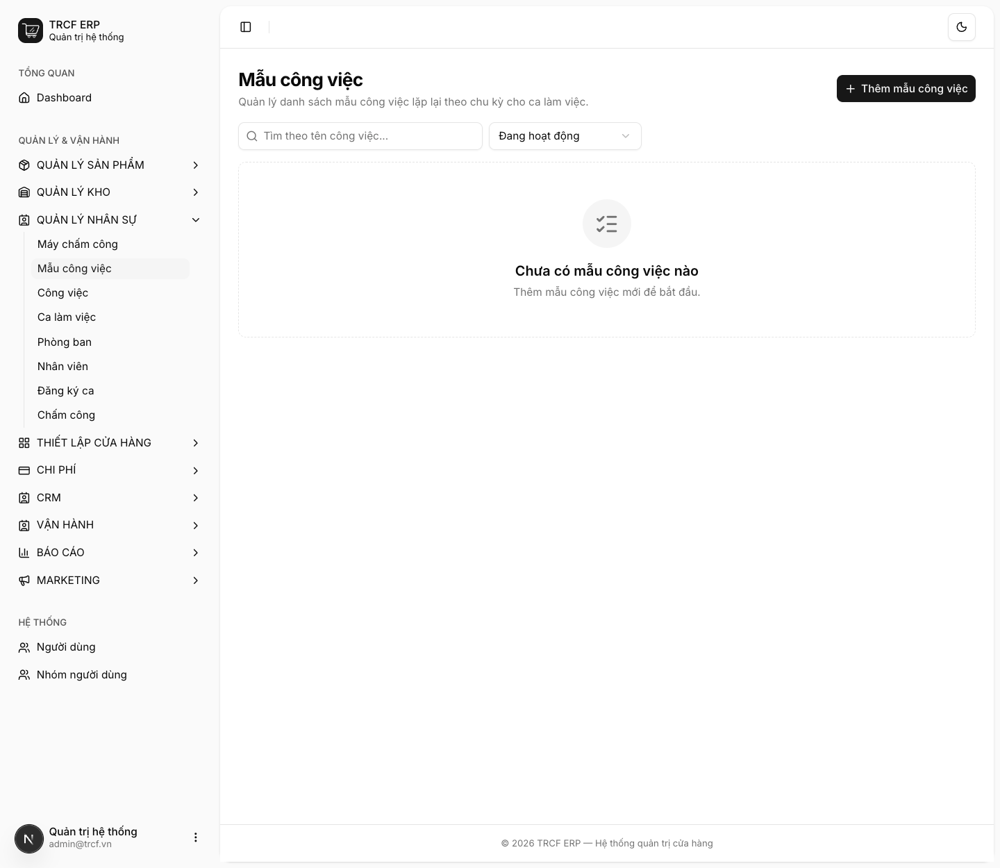
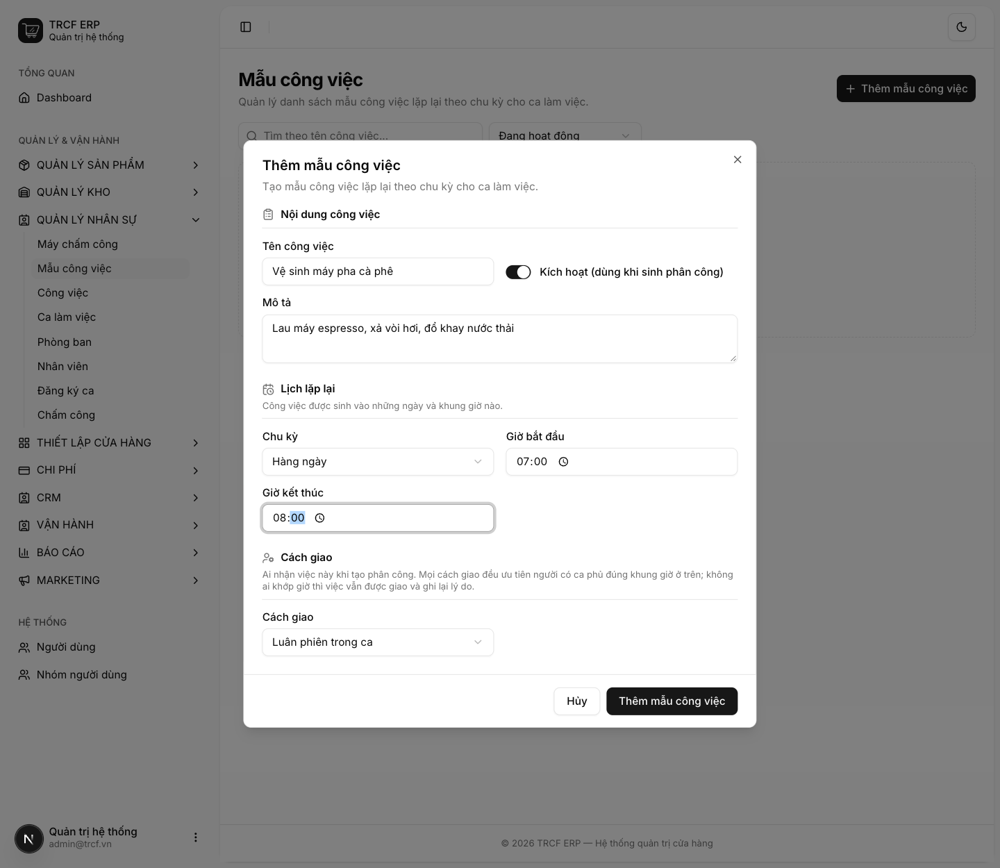
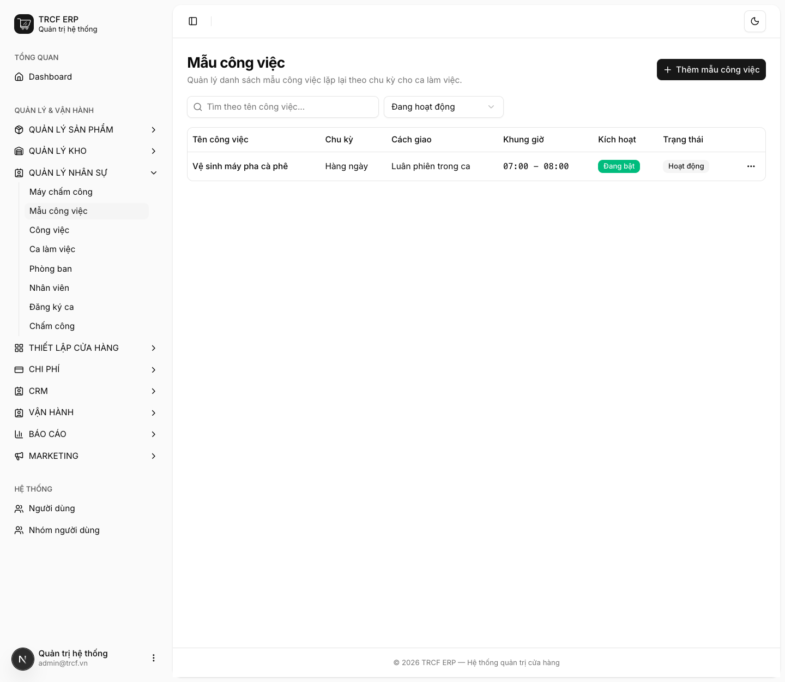
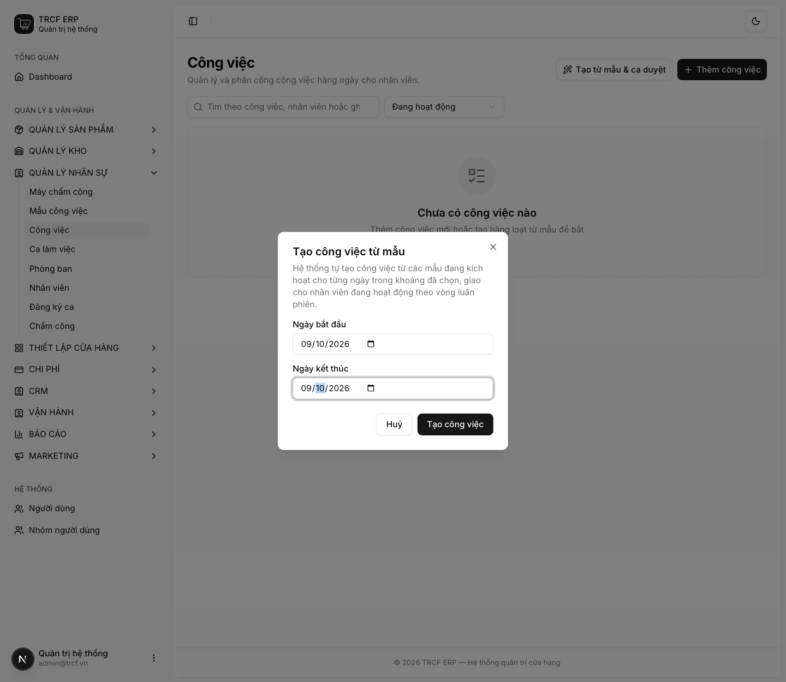
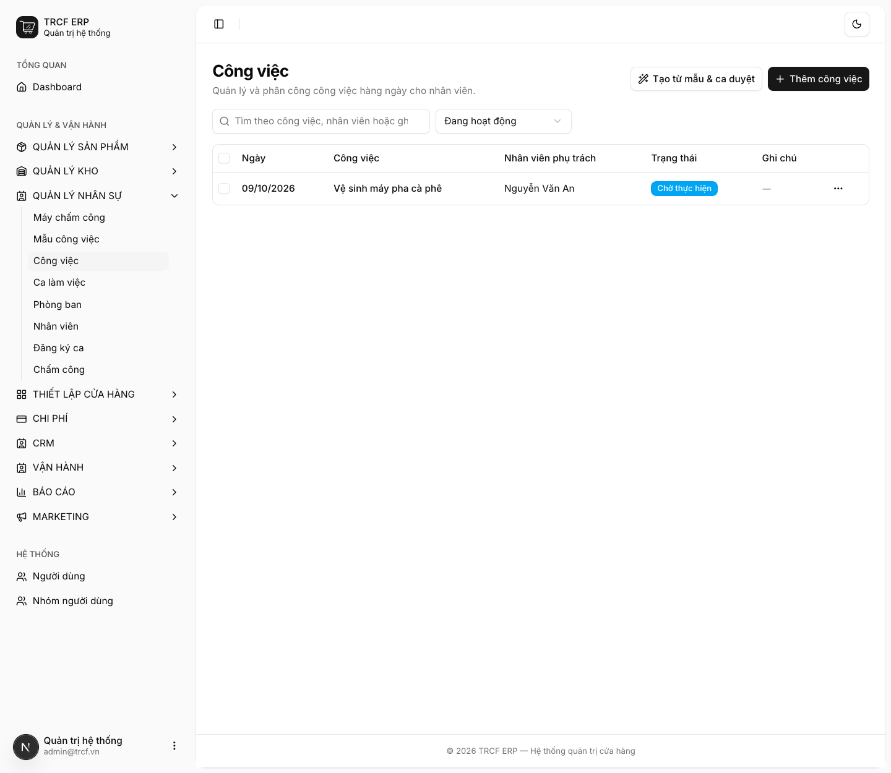

Chương 7 · Quản lý ca làm và chấm công
7.5 Quản lý công việc trong ngày
1. Đường dẫn vào chức năng
Menu trái: Quản lý nhân sự → Mẫu công việc (địa chỉ /task-templates).
Sinh và theo dõi ở: Quản lý nhân sự → Công việc (địa chỉ /task-assignments).
- Cần có trước: nhân viên đã được duyệt ca (mục 7.3).
2. Ví dụ nền và các bước thực hiện
Ví dụ: việc lặp mỗi ngày "Vệ sinh máy pha cà phê" từ 07:00 đến 08:00, giao luân phiên cho người có ca.
- Mẫu: chu kỳ "Hàng ngày", cách giao "Luân phiên trong ca".
- Sinh việc cho ngày 09/10/2026: giao cho "Nguyễn Văn An" (đã duyệt "Ca sáng").
Bước 1Mở trang Mẫu công việc
- Bấm Quản lý nhân sự ở menu trái, chọn Mẫu công việc.
- Bấm Thêm mẫu công việc.

Bước 2Khai mẫu việc lặp
- Tên công việc: nhập "Vệ sinh máy pha cà phê".
- Kích hoạt: để bật.
- Mô tả: nhập "Lau máy espresso, xả vòi hơi, đổ khay nước thải".
- Chu kỳ: chọn "Hàng ngày".
- Giờ bắt đầu: "07:00". Giờ kết thúc: "08:00".
- Cách giao: chọn "Luân phiên trong ca".
- Bấm nút Thêm mẫu công việc.

Bước 3Kiểm tra mẫu
- Mẫu hiện trong danh sách: chu kỳ, cách giao, khung giờ, trạng thái Đang bật.

Bước 4Sinh việc cho khoảng ngày
- Vào Quản lý nhân sự → Công việc, bấm Tạo từ mẫu & ca duyệt.
- Ngày bắt đầu, Ngày kết thúc: chọn khoảng ngày.
- Bấm nút Tạo công việc.
- Thấy thông báo “Đã tạo N công việc”.

Bước 5Theo dõi
- Danh sách có việc mới, trạng thái Chờ thực hiện, đúng người nhận.
- Nhân viên đổi trạng thái sang Hoàn thành (mục 5.2): hệ thống tự ghi thời điểm.
- Quản lý lọc theo ngày / nhân viên / trạng thái để xem việc nào còn dở.

3. Giải thích các trường
Mẫu công việc
| Trường | Điền gì | Bắt buộc |
|---|---|---|
| Tên công việc | VD "Vệ sinh máy pha cà phê" | ✅ |
| Kích hoạt | Tắt: tạm ngừng, không sinh việc nữa | ✅ |
| Mô tả | Hướng dẫn chi tiết cho người làm | — |
| Chu kỳ | Hàng ngày / Thứ trong tuần / Hàng tháng | ✅ |
| Thứ hoặc Ngày trong tháng | Chỉ hiện khi chọn chu kỳ tương ứng | ✅ theo chu kỳ |
| Giờ bắt đầu, Giờ kết thúc | Khung giờ nên làm việc này | ✅ |
| Cách giao | Xem bảng dưới | ✅ |
Ba cách giao
| Cách giao | Ai nhận việc |
|---|---|
| Luân phiên trong ca | Chia lần lượt cho những người có ca |
| Giao theo phòng ban | Chỉ chia cho người thuộc phòng ban đã chọn |
| Giao cố định cá nhân | Luôn giao cho một người đã chọn |
Mọi cách giao đều ưu tiên người có ca phủ đúng khung giờ. Không ai khớp giờ thì việc vẫn được giao và ghi lại lý do.
Khi bấm Tạo công việc, hệ thống làm gì
- Duyệt từng ngày trong khoảng.
- Lấy các mẫu đang kích hoạt khớp lịch của ngày đó.
- Lấy danh sách nhân viên đã được duyệt ca ngày đó.
- Chia việc theo cách giao của mẫu.
- Bỏ qua việc đã tồn tại: bấm lại không tạo trùng.
4. Lưu ý quan trọng
⚠️
Ngày nào không có ai được duyệt ca thì hệ thống báo lỗi.
- Không sinh việc treo không người làm.
- Duyệt ca trước (mục 7.3).
💡
Bỏ Kích hoạt ở mẫu là cách tạm ngừng một việc mà không mất lịch sử.
- Xoá mẫu thì các việc đã sinh vẫn còn.